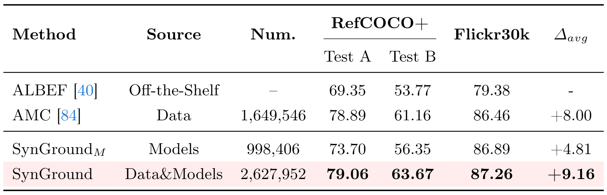

Learning from Synthetic Data for Visual Grounding
Ruozhen Catherine He1 Ziyan Yang1 Paola Cascante-Bonilla2 Alexander C. Berg3 Vicente Ordóñez1
1Rice University, 2University of Maryland, 3UC Irvine

Abstract
This paper extensively investigates the effectiveness of synthetic training data to improve the capabilities of vision-and-language models for grounding textual descriptions to image regions. We explore various strategies to best generate image-text pairs and image-text-box triplets using a series of pretrained models under different settings and varying degrees of reliance on real data. Through comparative analyses with synthetic, real, and web-crawled data, we identify factors that contribute to performance differences, and propose SynGround, an effective pipeline for generating useful synthetic data for visual grounding. Our findings show that SynGround can improve the localization capabilities of off-the-shelf vision-and-language models and offers the potential for arbitrarily large scale data generation. Particularly, data generated with SynGround improves the pointing game accuracy of a pretrained ALBEF and BLIP models by 4.81% and 17.11% absolute percentage points, respectively, across the RefCOCO+ and the Flickr30k benchmarks.
Overview
Data is effective for learning visual grounding, but expensive to curate at scale.
In contrast, learning from related models is more flexible yet less effective.
Our proposed paradigm leverages the benefits of training using both data and models, improving performance for visual grounding.
Overview of our image-text-box synthesis pipeline. We use an image description generator Ψc, which outputs a description that serves as a prompt to an image generator Ψg to obtain synthetic image I. We also use this description to obtain text phrases T by prompting an LLM Ψt. Finally, we input the synthetic text and image into an object detector Ψd to obtain synthetic boxes B.
In this work, we introduce a pragmatic framework for image-text-box synthesis tailored for visual grounding. To the best of our knowledge, this paper is the first to study to which extent learning from models impacts the capability of a pre-trained vision-and-language model to localize objects in an image given a visual explanation. We navigate from lower to higher synthetic purity levels, and break down our investigation of synthetic image-text-box generation into image-text pairs and image-text-box synthesis. Our method, SynGround, leverages a captioning model to generate dense textual descriptions, used for image synthesis. The generated image descriptions are fed into an LLM for text synthesis. Finally, the image-text-box generation is complemented with synthetic bounding boxes from an open-vocabulary object detector. Remarkably, finetuning a base pretrained vision-and-language model on such synthetic set leads to a substantial performance gain, showcasing the potential of learning from models. More importantly, it reaches new heights when learning from models and data by finetuning on both real and synthetic data.
Experimental Results
We evaluate a vision-and-language model's visual grounding performance through gradient-based explanations with pointing-game accuracy on RefCOCO+ and Flickr30k. We compare the visual grounding improvements for the off-the-shelf base model (row 1) by learning exclusively from data (row 2), from models (row 3), and a combination of both (row 4).

Samples of our synthetic image-text-boxes.
Samples of our synthetic image-text-boxes generated at a higher synthetic purity level.
BibTeX
@article{he2024learning,
title={Learning from Models and Data for Visual Grounding},
author={He, Ruozhen and Cascante-Bonilla, Paola and Yang, Ziyan and Berg, Alexander C and Ordonez, Vicente},
journal={arXiv preprint arXiv:2403.13804},
year={2024}
}